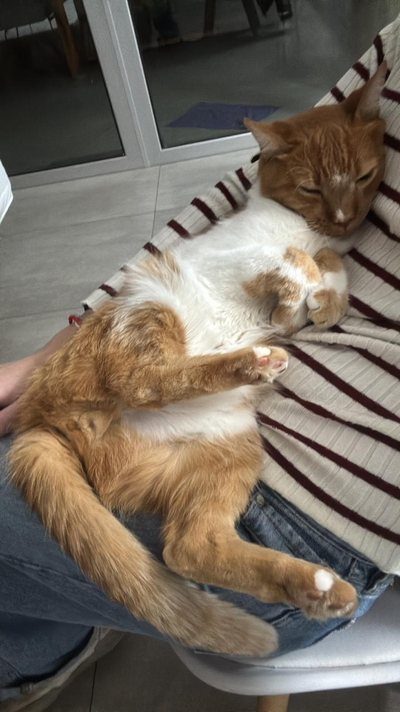
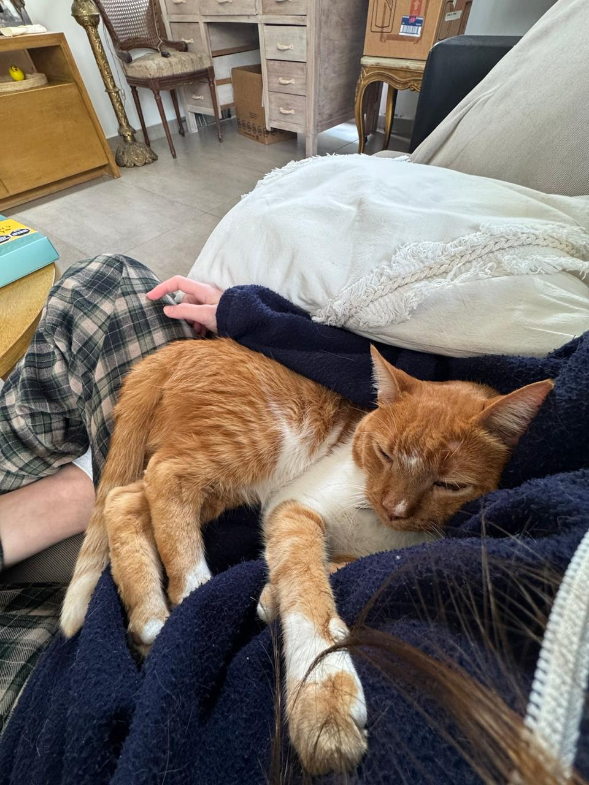
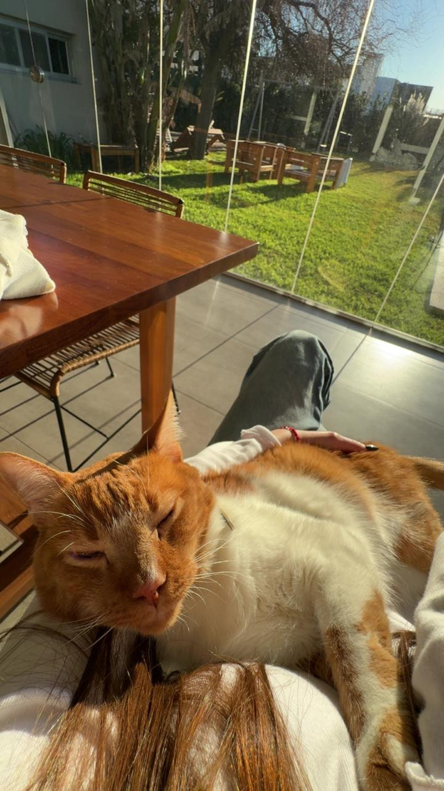

Datitos de cocina
Hay algo en la cocina que me gusta mas que la accion de cocinar: el origen, la lógica y el aprender constantemente. Detrás de cada técnica se encuentra un secreto, un tip o una forma de hacer las cosas que tienen una logica de por que asi y no de otra forma. Acá van algunos datos que comparto con mis amigos y familiares al hablar de comida:
¿Sabías que a la cebolla caramelizada no se le pone azucar?
La cebolla tiene azucares en su composicion los cuales hacen que se caramelice cuando la cocinamos por mucho tiempo controlando la temperatura. Hay gente que usa el azucar para acelerar el proceso o por gusto a "dulce", pero tecnicamente no necesita.
¿Sabías que el horno a fuerte temperatura no funciona mas rapido?
Aunque parezca obvio hay gente que todavia no sabe que depende el alimento que queramos cocinar es a la temperatura que va el horno. Principalmente en la pasteleria los bizcochuelos se cocinan a una temperatura muuuuuuy bajita para que queden bien cocidos y esponjosos, a diferencia de las masas tipo sablee que neceasitan cocinarse a tempreratura alta ya que por el poco espesor no requieren mucho tiempo en horno.
¿Si te digo que la comida frita no hace mal me crees?
Estamos en una epoca donde la desinformacion es muy comun y mas si se trata de alimentacion "saludable". Los alimentos fritos son un gran problema para la gente que fomenta la alimentacion saludable, pero si me dejan decirles no es tan malo como se cree. La gente se suele quejar de los alimentos fritos porque son grasos o caen mal pero en el 90% de las veces son alimentos que compran en rotiserias o cadenas grandes y eso si que no es recomendado por la falta de cuidado alimentario. Al momento de comer alimentos fritos hechos en casa la gente comete errores, los dos mas comunes son: freir con el aceite frio, lo que genera un alimento muy grasoso por tener que estar mas tiempo sumergido, y freir en aceite quemado, lo que genera que el aceite pierda sus propiedades y haga mal a quien lo consume.ACLARACION. Como en la mayoria de alimentos el consumo no es dañiño si se consume con cautela, ningun alimento en exceso hace bien!
Aca les dejo un link de receta de cebolla caramelizada, NO LE PONGAN AZUCAR!!!
Posta no le pongan azucar, por favor ↑ Volver arribaMi coleccion favorita: fotos de mi gato
No sé en qué momento pasó, pero tengo mil de fotos de mi gato durmiendo. Cada vez que lo veo, durmiendo en CUALQUIER posicion, le saco una foto.



Top del prejuicio: la facultad de Artes
"En Artes solo van a fumar y a hacer nada."
Frase típica que se escucha en cualquier otra facultad
Es curioso, porque no importa a qué facultad vayas, siempre aparece esta crítica hacia Artes. Pero cuando mirás de cerca a las demás, aparecen las mismas situaciones o "fenomenos":
- Se dice que en Artes "no se estudia en serio"
- Pero cualquier carrera tiene sus materias exigentes y sus materias más relajadas
- Se dice que en otras facultades "todos son iguales"
- Cuando en realidad cada facultad tiene su propia diversidad interna
- El prejuicio suele decir más de quien lo repite que de la facultad en sí
Mi conclusión: el chiste es gracioso siempre y cuando sea solo un chiste, si lo analisamos seriamente nos podemos dar cuenta que es el mismo mecanismo de prejuicio que se aplica en otros contextos más serios.
↑ Volver arriba